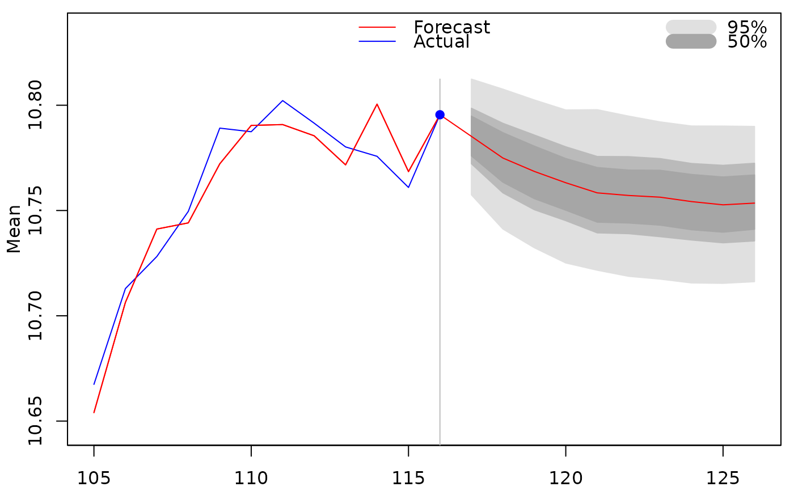
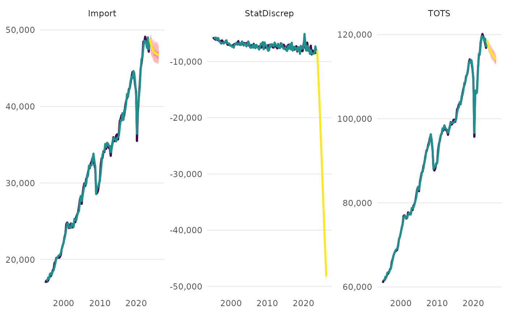
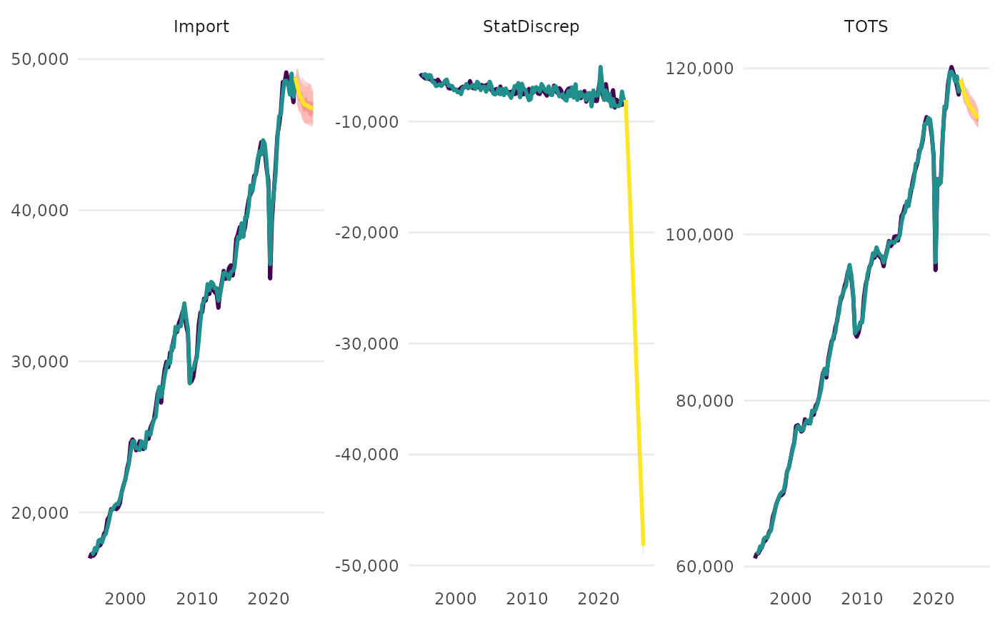

Plot a Forecast Object of the Aggregate Model
plot.aggmod.forecast.RdPlot a Forecast Object of the Aggregate Model
Usage
# S3 method for aggmod.forecast
plot(
x,
exclude.exogenous = TRUE,
order.as.run = FALSE,
interactive = FALSE,
first_date = NULL,
grepl_variables = NULL,
...
)Arguments
- x
An object of class aggmod.forecast, which is the output from the forecast_model function.
- exclude.exogenous
Logical. Should exogenous values be plotted? Default is FALSE.
- order.as.run
Logical. Should the plots be arranged in the way that the model was run? Default FALSE.
- interactive
Logical. Should the resulting plot be launched in an interactive way (the plotly package is required for this).
- first_date
Character. First date value to be shown. Must be a character value that can be turned into a date using as.Date() or NULL.
- grepl_variables
Regular Expression Character. Can be used to select variables to be plotted. Experimental feature so use with care.
- ...
Further arguments (currently not in use).
Examples
spec <- dplyr::tibble(
type = c(
"d",
"d",
"n"
),
dependent = c(
"StatDiscrep",
"TOTS",
"Import"
),
independent = c(
"TOTS - FinConsExpHH - FinConsExpGov - GCapitalForm - Export",
"GValueAdd + Import",
"FinConsExpHH + GCapitalForm"
)
)
# \donttest{
a <- run_model(specification = spec, dictionary = NULL,
inputdata_directory = NULL, primary_source = "download",
save_to_disk = NULL, present = FALSE)
#> Table namq_10_a10 cached at /tmp/RtmpX3qN5n/eurostat/0ce900d1db16519a6a4802bf61a2de80.rds
#> Table namq_10_gdp cached at /tmp/RtmpX3qN5n/eurostat/d63eb01c350ec7f1bc8d8a8748cbaf1c.rds
#>
#> --- Estimation begins ---
#> Estimating Import = FinConsExpHH + GCapitalForm
#> Constructing TOTS = GValueAdd + Import
#> Constructing StatDiscrep = TOTS - FinConsExpHH - FinConsExpGov - GCapitalForm - Export
plot(forecast_model(a))
#> No exogenous values provided. Model will forecast the exogenous values with an AR4 process (incl. Q dummies, IIS and SIS w 't.pval = 0.001').
#> Alternative is exog_fill_method = 'last'.

 
# }

# }